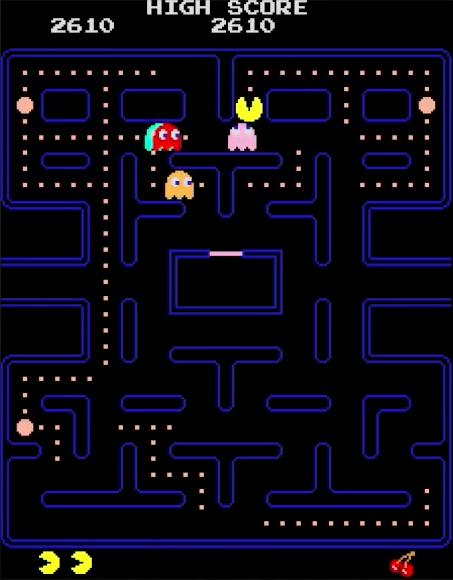
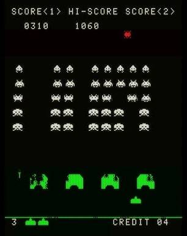
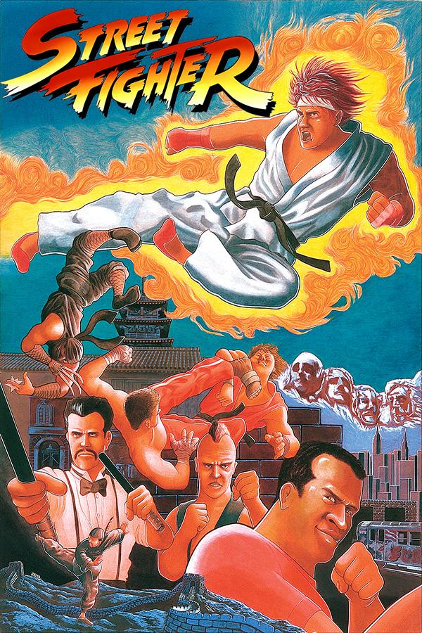

Als anys 70 i 80, les sales arcade van esdevenir el centre neuràlgic del videojoc.
Eren espais plens de llums, sons electrònics i màquines que captivaven jugadors de totes les edats.
Títols com Pong, Space Invaders i Pac-Man
van marcar el naixement d’una nova cultura digital i van establir les bases del videojoc modern.
Les arcades no eren només llocs per jugar: eren espais socials.
Les puntuacions altes es convertien en reptes personals i símbols d’estatus.
Amb l’arribada de Street Fighter II, les màquines de lluita van impulsar tornejos improvisats,
rivalitats mítiques i una comunitat competitiva que encara perdura.
L’arribada de consoles domèstiques cada vegada més potents va reduir la presència de les sales arcade.
Tot i això, el seu llegat continua viu en la cultura retro, en els esports electrònics i en els salons recreatius moderns,
que mantenen viva l’essència d’aquella època daurada.
Història de les sales arcade
Durant les dècades dels 70 i 80, les màquines arcade van ser el centre de la cultura del videojoc.
Les sales recreatives eren punts de trobada on jugadors competien per batre rècords i gaudir de títols
que avui són autèntiques icones: Pac-Man, Donkey Kong, Galaga i molts més.
Als anys 90, amb l’arribada de jocs de lluita com Street Fighter II i Mortal Kombat,
les arcades van viure una segona joventut. Aquestes màquines van convertir-se en espais de competició,
socialització i cultura urbana.
Exemples icònics

Pac-Man (1980)

Space Invaders (1978)

Street Fighter II (1991)